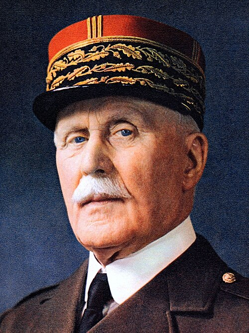

Philippe Pétain
Mariscal héroe de la Primera Guerra Mundial que, en su vejez, encabezó el régimen colaboracionista de Vichy. Su trayectoria resume la tragedia de la Francia derrotada y dividida.
Datos
| Nombre completo | Henri Philippe Bénoni Omer Joseph Pétain |
|---|---|
| Nacimiento | 24 de abril de 1856, Cauchy-à-la-Tour (Francia) |
| Fallecimiento | 23 de julio de 1951, Île d'Yeu (Francia) |
| Cargo | Jefe del Estado Francés (régimen de Vichy), 1940-1944 |
| Rama | Mariscal de Francia |
Orígenes y carrera militar
Philippe Pétain nació en 1856 en el norte de Francia, en una familia campesina. Ingresó en el ejército y tuvo una carrera lenta y discreta durante décadas. Era ya un oficial de edad avanzada, próximo al retiro, cuando estalló la Primera Guerra Mundial. A diferencia de la doctrina ofensiva dominante en el ejército francés, Pétain defendía el valor de la potencia de fuego y la defensa, ideas que la sangrienta realidad de la guerra de trincheras acabaría confirmando.
El héroe de Verdún
Su momento de gloria llegó en 1916, cuando fue puesto al frente de la defensa de Verdún, una de las batallas más largas y mortíferas de la historia. Pétain organizó la rotación de tropas y el suministro por la célebre "Vía Sagrada", y su gestión, que buscaba economizar vidas, lo convirtió en héroe nacional. Más tarde, como comandante en jefe, contribuyó a restaurar la moral del ejército francés tras las grandes rebeliones de 1917. Terminó la guerra cubierto de honores y con el bastón de mariscal de Francia.
Entreguerras y prestigio nacional
Durante el periodo de entreguerras, Pétain fue una de las figuras más respetadas de Francia, un símbolo viviente de la victoria de 1918. Ocupó altos cargos militares y públicos y su prestigio le rodeó de un aura casi mítica. Fue partidario de la estrategia defensiva encarnada en la Línea Maginot. Con el paso de los años, sin embargo, se convirtió en un anciano cuya reputación pesaba más que sus capacidades reales.
1940: del armisticio al poder
Cuando la Batalla de Francia se saldó con una catástrofe en junio de 1940, el país, presa del pánico y el desconcierto, recurrió a su viejo héroe. Pétain, con 84 años, fue llamado a formar gobierno. Convencido de que la guerra estaba perdida, optó por solicitar el armisticio con Alemania, frente a quienes, como De Gaulle, defendían continuar la lucha desde el imperio colonial.
Poco después, la Asamblea le concedió plenos poderes, y Pétain enterró la Tercera República para instaurar el Estado Francés, con capital en la ciudad balneario de Vichy, en la zona no ocupada del sur. Su lema, "Trabajo, Familia, Patria", sustituyó al republicano "Libertad, Igualdad, Fraternidad".
El régimen de Vichy y la colaboración
El régimen de Vichy fue autoritario, conservador y colaboracionista. Bajo la doctrina de la "colaboración" con la Alemania nazi —sellada en el encuentro de Montoire entre Pétain y Hitler—, el Estado Francés persiguió a la resistencia, a los comunistas y a los judíos. Vichy promulgó por iniciativa propia leyes antisemitas y colaboró en la detención y deportación de judíos a los campos de exterminio, incluidos miles de niños. También suministró recursos y mano de obra a la maquinaria de guerra alemana (ver Alianzas y Sociedad).
Pétain gozaba inicialmente de gran popularidad entre una población traumatizada, que veía en él a un "escudo" protector frente al ocupante, mientras De Gaulle era la "espada" de la resistencia. Con el tiempo, esa imagen se fue deteriorando a medida que la colaboración se hacía más evidente y odiosa.
Declive e impotencia
En noviembre de 1942, tras el desembarco aliado en el Norte de África, Alemania ocupó también la zona sur, y Vichy quedó reducido a una cáscara vacía, sometida por completo al ocupante. Pétain, cada vez más anciano y aislado, se convirtió en una figura decorativa e impotente, mientras el poder real recaía en colaboracionistas más radicales como Pierre Laval. La resistencia crecía y el desenlace de la guerra se volvía inequívoco.
Juicio y condena
Tras la liberación de Francia en 1944, los alemanes trasladaron a Pétain a Alemania. Regresó voluntariamente para ser juzgado. En 1945, un tribunal lo condenó por traición a la pena de muerte, degradación militar y confiscación de bienes. En atención a su edad y a sus servicios pasados en la Primera Guerra Mundial, De Gaulle conmutó la pena capital por cadena perpetua. Pétain pasó sus últimos años preso en una isla del Atlántico, donde murió en 1951, ya muy deteriorado.
Legado y valoración histórica
La figura de Philippe Pétain encarna como ninguna otra el dilema y la vergüenza de la colaboración. El héroe de 1916 se convirtió en el rostro de la Francia derrotada y sometida, responsable de un régimen que participó activamente en la persecución de sus propios ciudadanos. Su trayectoria plantea preguntas difíciles sobre el patriotismo, la responsabilidad y los límites de la obediencia. En Francia, su nombre sigue siendo profundamente controvertido y su recuerdo permanece asociado a uno de los episodios más dolorosos de la historia nacional.
← Volver a Líderes